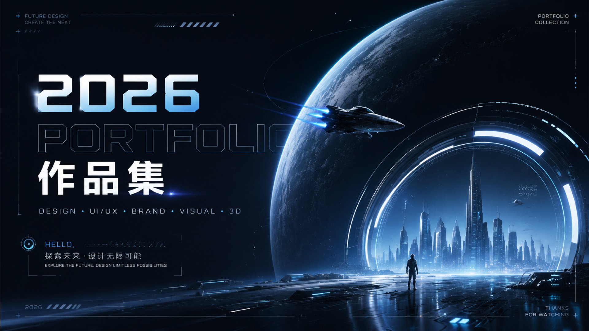

UI Case 01
从核心任务出发，重构页面信息与操作路径
通过用户路径梳理、竞品观察和原型验证，优化关键页面的信息层级、交互节奏和视觉状态，让用户更快理解并完成主要任务。
- 我的职责：信息架构、交互原型、界面设计、设计规范
- 关键产出：用户流程、低保真原型、高保真界面、组件状态
- 结果占位：完成率提升、操作步骤减少、团队复用效率提升

Portfolio Index
主视觉负责建立第一印象，下面的分类入口负责把作品拆成清晰路径。你可以先放代表作品，后续再把每个分类扩展成完整作品区。
UI / Product Work
UI 项目适合用案例方式讲清楚：问题是什么、你负责什么、设计如何推进、最后产出了什么结果。第一版先放 2-3 个重点项目。
通过用户路径梳理、竞品观察和原型验证，优化关键页面的信息层级、交互节奏和视觉状态，让用户更快理解并完成主要任务。
统一按钮、表单、卡片、状态反馈和页面节奏，让设计交付更稳定。
围绕首屏信息、筛选逻辑和关键操作，降低用户理解成本。
用视觉层级、信息分组和行动入口，提高活动页的浏览效率。
Graphic Work
平面作品不一定都需要写成长案例。建议用“系列 + 画廊”的方式展示，让作品的风格、版式、色彩和执行完成度先被看见。
适合放你最强的一组平面作品：活动主视觉、系列海报、社媒延展、线下物料或品牌传播图。这里重点展示概念、版式、色彩和成套延展能力。
Logo 延展、品牌色、辅助图形、名片、手册或品牌规范。
商业海报、展览海报、校园活动、音乐/文化主题海报。
画册、折页、杂志排版、作品集内页或信息图设计。
KV、社媒图、易拉宝、邀请函、周边包装和线下延展。
About
我兼具平面视觉和 UI 设计能力，既能处理品牌、海报、版式等视觉表达，也能把视觉语言延展到界面系统和数字产品体验中。
请把这里替换成你的真实经历：教育背景、实习/工作经历、擅长风格、代表项目、软件能力，以及你希望招聘方记住的 2-3 个关键词。
Resume
第一版可以先把 PDF 简历放到 `assets/resume.pdf`。如果你还有完整作品集 PDF，也可以后续增加一个“下载完整作品集”的入口。
Contact
正在寻找视觉设计、平面设计、UI 设计或综合设计相关机会。欢迎通过以下方式联系。